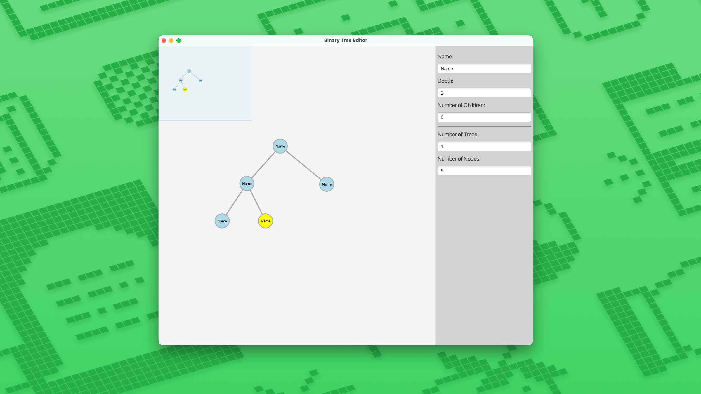
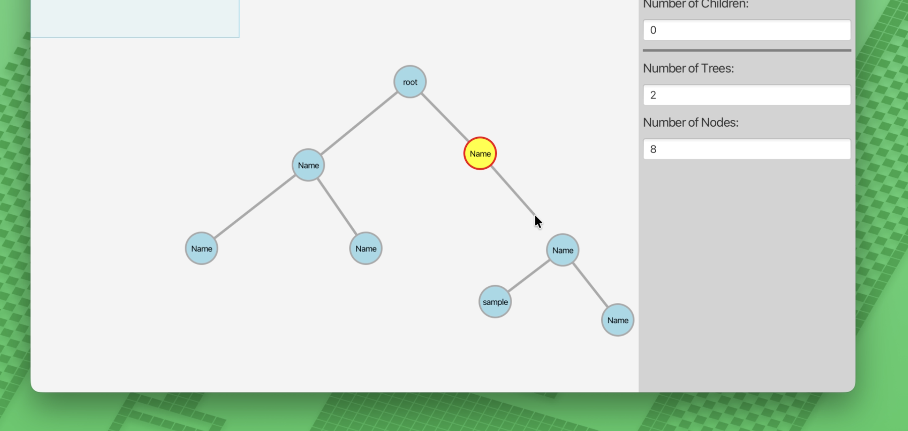
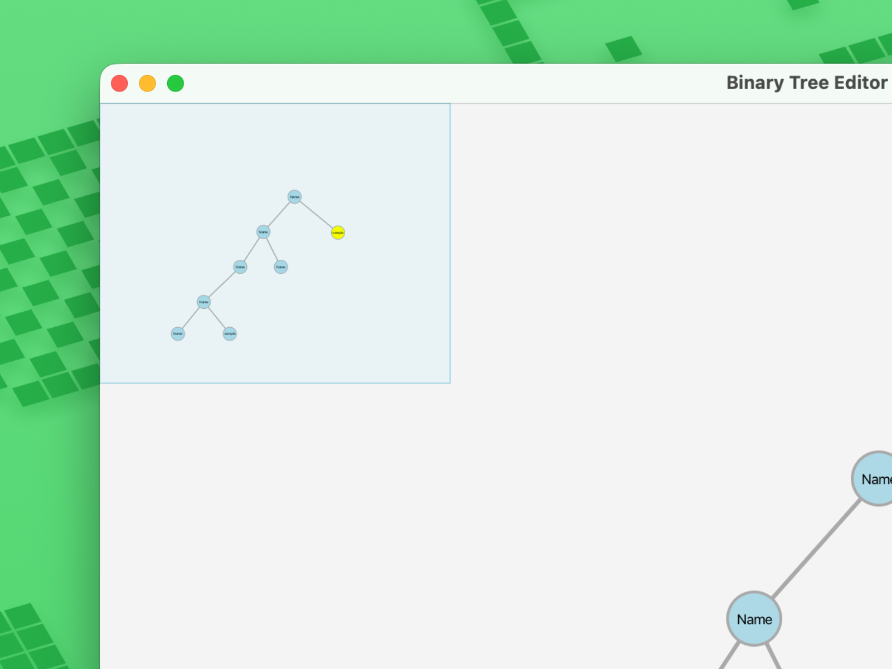
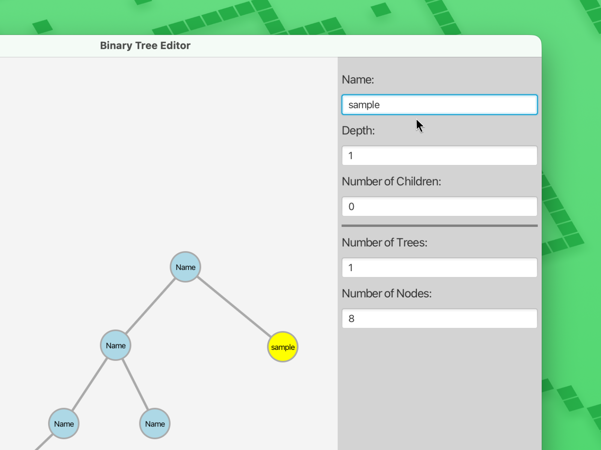

Interaction and Multiple Views

This project is an interactive binary tree editor built with JavaFX, made to practice Model-View-Controller (MVC), a way of organizing code so the data, the visuals, and the user input are all kept separate and easier to manage. The user can click to add nodes, hold Shift and drag to connect them as parent and child, move branches around, select or delete parts, and see everything update right away. Since the tree can get bigger than the screen, there's a small overview map that shows the whole tree at once. There's also a side panel where the user can view or edit details about the node they picked, like its name, depth, and number of children, along with a few basic stats about the tree overall. Overall, it works a lot like the drag-and-drop editors you'd see in real diagramming tools, just built from scratch.


